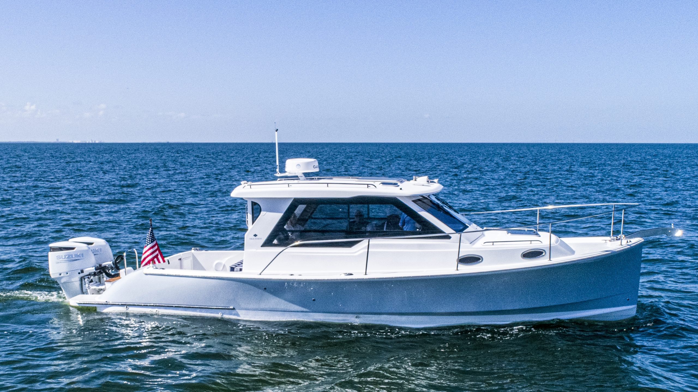

B-Atlas Boat Guide · TRUN-34
True North 34 Original Diesel / Inboard
2002–2011
The original True North 34 is a Downeast power cruiser developed before the later outboard-generation True North 34. The original B-Atlas record represents the earlier diesel/inboard cruising concept; later Catalina-era Outboard Express boats are materially different and should be tracked separately.

- Length
- 34.33 ft
- Beam
- 12.33 ft
- Draft
- 2.83 ft
- Hull behaviour
- Semi-Displacement
- Fuel
- Diesel
- Propulsion
- Shaft
- Engine configuration
- Single diesel inboard on original True North 34
- Boat family
- Downeast
- Construction
- Fiberglass
Best for
- Couples seeking an original diesel Downeast cruiser
- Coastal cruising with emphasis on cockpit utility
- Buyers comfortable distinguishing model generations
Trade-offs
- The True North 34 name spans materially different generations
- Original and later outboard specifications must not be mixed
- Interior volume remains moderate relative to taller cruisers
Known concerns
- No model-specific concern has been promoted to B-Atlas’s evidence threshold. This does not mean the model has no age-, condition- or hull-specific risks.
Inspection focus
- Confirm whether the boat is original diesel or later Outboard Express generation
- Inspect engine, exhaust, cooling, shaft and fuel systems on diesel boats
- Inspect hull/deck structure and cockpit openings
- Verify actual fuel/water tankage and displacement by generation
- Confirm transom/propulsion configuration has not been converted
Continue researching
Related boat models
Back Cove 33 Downeast Cruiser
34.67 ft · Semi-Displacement
Duffy 35 Downeast / Lobsterboat Hull
35 ft · Semi-Displacement
Fortier 33 Downeast Cruiser
33.5 ft · Semi-Displacement
Mainship 30 Pilot
33.08 ft · Semi-Displacement
Hunt Yachts Surfhunter 36 Coupe Coupe
36.5 ft · Planing
Albin 32+2 Command Bridge
36.75 ft · Planing
About this record
B-Atlas preserves uncertainty: missing information remains unknown rather than being treated as a negative. Specifications and guidance describe the model record; individual boats can differ by year, equipment, refit and condition.